Conectores Tyco/AMP — 102 vías en línea
Herramientas especiales
| • | EL-38125-580 Juego de herramientas de liberación de terminales |
| • | Herramienta de liberación de terminales J-38125-11A |
| • | J-38125-212 Herramienta de liberación de terminales |
| • | J-38125-216 Herramienta de liberación de terminales |
| • | J-38125-221 Herramienta de liberación de terminales |
| • | J-38125-560 Herramienta de liberación de terminales |
| • | J-38125-566 Herramienta de liberación de terminales |
Si desea informarse sobre herramientas regionales equivalentes, consultar Herramientas especiales .
Procedimiento de extracción de terminales
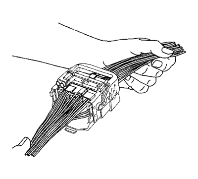
Vista de un conector típico en la posición montada.
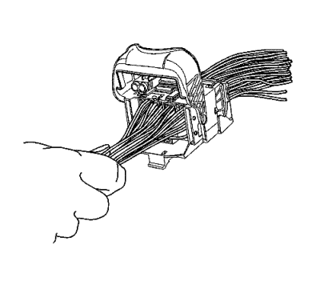
- Tire de la palanca de bloqueo a la posición de 90 grados respecto al cuerpo del conector.
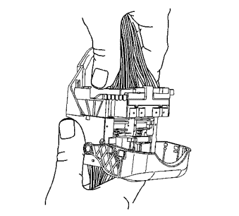
- Con la palanca de bloqueo en la posición de 90 grados y el cuerpo del conector macho separado, puede deslizarse hacia fuera para la extracción.
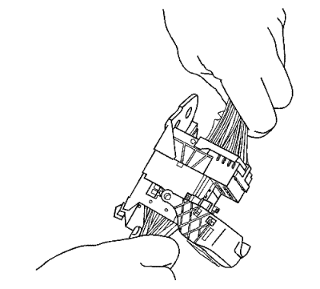
- Deslice el cuerpo del conector macho fuera de las placas guía.
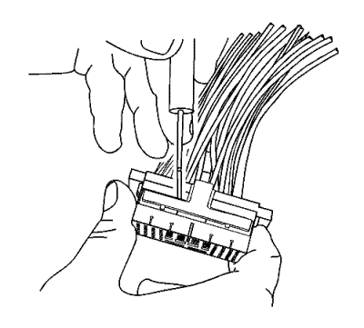
Nota: Durante el montaje, el seguro de posición de terminal (TPA) no se asentará completamente hasta que no estén totalmente asentados todos los terminales.
- Mediante la herramienta de desbloqueo de terminales J-38125-11A o equivalente, extraiga el TPA del cuerpo del conector.
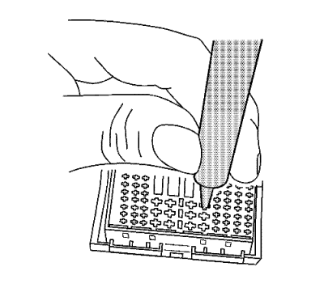
- Mediante la herramienta de desbloqueo de terminales, J-38125-566, presione las prolongaciones en los orificios de cada lado del terminal que va a extraerse para liberar las lengüetas de bloqueo y tirar del terminal fuera del cuerpo del conector.
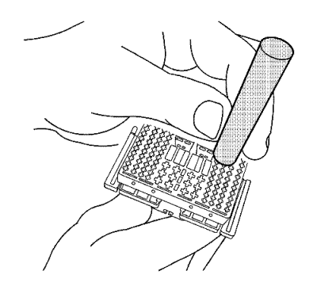
- Mediante la herramienta de desbloqueo de terminales, J-38125-560, presione las prolongaciones en los orificios de cada lado del terminal que va a extraerse para liberar las lengüetas de bloqueo y tirar del terminal fuera del cuerpo del conector.
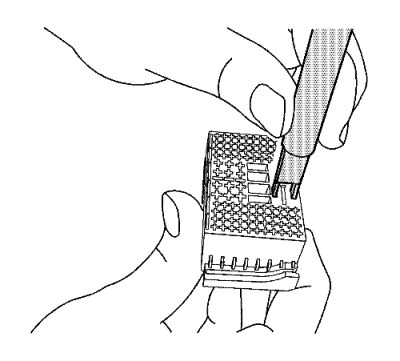
- Mediante la herramienta de desbloqueo de terminales, J-38125-221, presione las prolongaciones en los orificios de cada lado del terminal que va a extraerse para liberar las lengüetas de bloqueo y tirar del terminal fuera del cuerpo del conector.
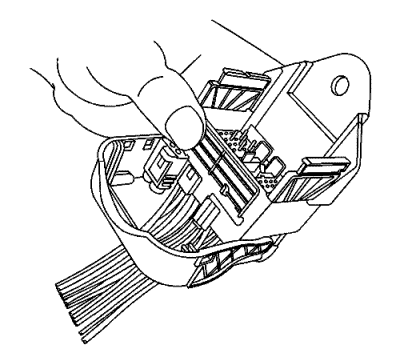
- El cuerpo del conector hembra puede tener un conector adicional enganchado al borde del cuerpo. Utilice la herramienta de desbloqueo de terminales J-38125-11A o equivalente para liberar la lengüeta de bloqueo y deslizar el conector fuera del cuerpo hembra.
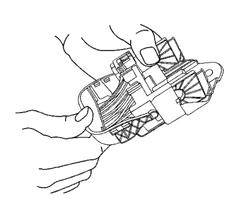
- Desplace la palanca de bloqueo 180 grados respecto de la posición conectada.
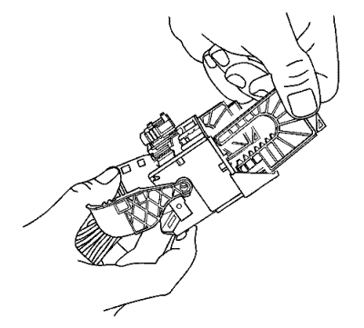
- Con la palanca de bloqueo en la posición de 180 grados, pueden extraerse las placas guía del cuerpo del conector.
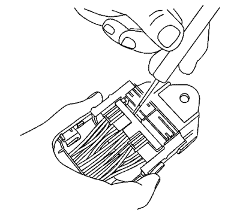
Nota: Durante el montaje, el TPA no se asentará completamente hasta que no estén totalmente asentados todos los terminales.
- Mediante la herramienta de desbloqueo de terminales J-38125-11A o equivalente, extraiga el TPA del cuerpo del conector.
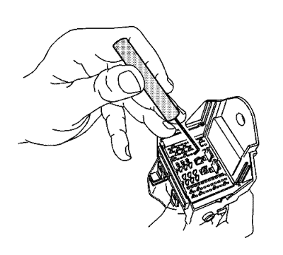
- Mediante la herramienta de desbloqueo de terminales J-38125-216, levante la placa del terminal pasados los terminales y fuera de la cavidad del cuerpo del conector.
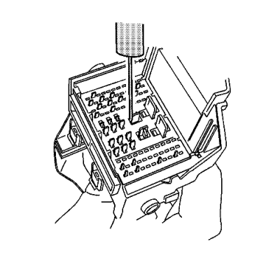
- La placa de terminal se doblará ligeramente en cada esquina.
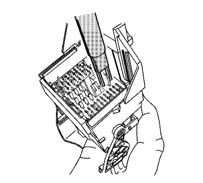
- Mediante la herramienta de desbloqueo de terminales, J-38125-221, presione las prolongaciones en los orificios de cada lado del terminal que va a extraerse para liberar las lengüetas de bloqueo y tirar del terminal fuera del cuerpo del conector.
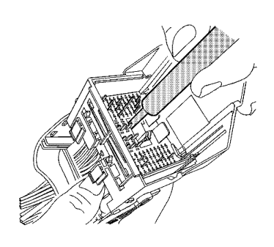
- Mediante la herramienta de desbloqueo de terminales, J-38125-212, presione las prolongaciones en los orificios de cada lado del terminal que va a extraerse para liberar las lengüetas de bloqueo y tirar del terminal fuera del cuerpo del conector.
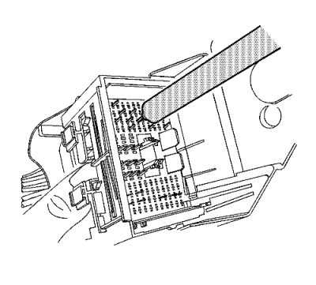
- Mediante la herramienta de desbloqueo de terminales, J-38125-560, presione las prolongaciones en los orificios de cada lado del terminal que va a extraerse para liberar las lengüetas de bloqueo y tirar del terminal fuera del cuerpo del conector.
- Presione la placa de terminal en el conector hembra hasta la posición preestablecida. La placa se doblará ligeramente en cada esquina.
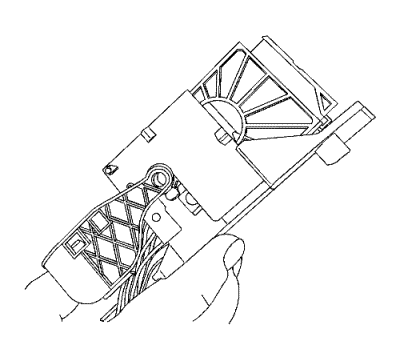
- Con la palanca de bloqueo en la posición de 180 grados, alinee las placas guía para que se engranen con los engranajes de la palanca de bloqueo.
- Deslice hacia dentro el cuerpo del conector macho hacia las placas guía.
- Con la palanca de bloqueo en la posición de 90 grados y el cuerpo del conector macho conectado, puede deslizarse hacia dentro para el montaje.
- Desplace la palanca a la posición bloqueada o a la posición montada. Esto tirará del conector macho hacia abajo en el conector hembra.
- Repare el terminal siguiendo el procedimiento
Reparaciones del terminal del conector : Reparación de Terminales → Reparación de cable con terminación procedimiento.
- Vuelva a insertar el terminal reparado en la cavidad. Repita el procedimiento de diagnóstico para verificar la reparación y vuelva a conectar los cuerpos de conector.
| © Copyright Chevrolet Europe. Reservados todos los derechos |